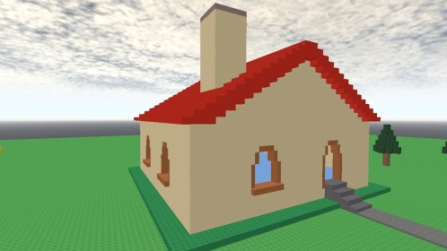
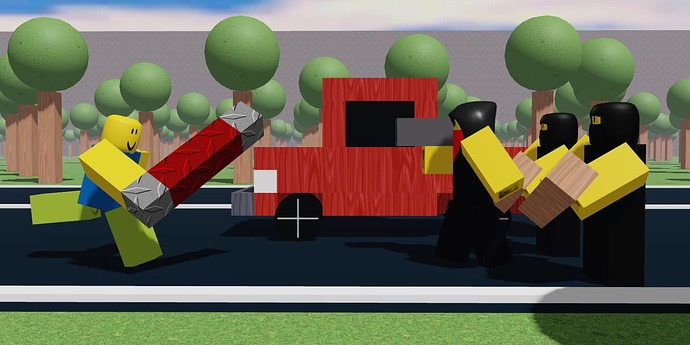

ESTABLISHED — 1899
INTERNAL INFORMATION DATABASE
NO SECURITY AGENCY es una organización dedicada a la asistencia, investigación y protección de individuos mediante métodos científicos, tecnológicos y psicológicos.
Desde nuestra fundación en 1899, nuestra misión principal ha sido encontrar soluciones para personas que requieren asistencia especializada.
La agencia trabaja con sistemas de recuperación, simulaciones, investigación humana y entornos controlados.
Ayuda a individuos que requieren tratamientos o métodos especiales de recuperación.
Investigación de nuevas tecnologías aplicadas al comportamiento y la conciencia humana.
Desarrollo de métodos destinados a preservar información cognitiva y memoria.
Creación de entornos virtuales controlados para pruebas experimentales.
Protección de individuos y datos considerados de alta importancia.
Métodos experimentales destinados a facilitar la reintegración de individuos.
Fundación de NO SECURITY AGENCY.
Creación del primer centro especializado en comportamiento humano.
Introducción de sistemas de simulación experimental.
Desarrollo de entornos virtuales controlados.
Inicio del denominado PROJECT R.
PROJECT R permanece bajo supervisión especial.

ARCHIVE IMAGE — HAPPY HOME ENVIRONMENT

ARCHIVE IMAGE — EARLY R ENVIRONMENT
NO SECURITY AGENCY
Programa experimental destinado al desarrollo de entornos virtuales avanzados.
Estado: ACTIVO
Nivel de autorización: IV+
El objetivo real del programa no se encuentra disponible en la versión pública de este documento.